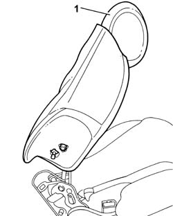

7050D18 REAR SEAT BACKREST - R.R.
- Path
- Procedures > 70 FITTINGS > 7050 REAR SEATS > 7050D REAR SEAT TRIM/PADDING > 7050D18 REAR SEAT BACKREST - R.R.
- Kind
- repair procedure (removal / refitting; the operation number is the code)
- Applies to
- all engines; all production periods
- Interactive page
- https://sloeber94.github.io/elrnDB-fUlss/en/#/179007910
Applies to: all engines; all production periods
 Removing
Removing
 Refitting
RefittingOp. 7050B10 ERAR SEAT HEAD RESTRAINT (ONE), LEFT OR RIGHT - R.R.
Op. 7050B07 BUSHES FOR (ONE) REAR SEAT HEAD RESTRAINT LEFT OR RIGHT - R.R.
Op. 7050A98 QUICK RELEASE PASSENGER COMPARTMENT REAR SEATS - R.R.
Op. 7050A96 REAR SEAT GUARD (ONE) - R.R.
Op. 7050A68 LH OR RH PROTECTION (ONE) OF ONE REAR SEAT SQUAB RELEASE MECHANISM R R
- Remove the rear seat backrest.

Applies to: all engines; all production periods
Refitting
Removing- Fit the rear seat backrest.
Op. 7050A68 LH OR RH PROTECTION (ONE) OF ONE REAR SEAT SQUAB RELEASE MECHANISM R R
Op. 7050A96 REAR SEAT GUARD (ONE) - R.R.
Op. 7050A98 QUICK RELEASE PASSENGER COMPARTMENT REAR SEATS - R.R.
Op. 7050B07 BUSHES FOR (ONE) REAR SEAT HEAD RESTRAINT LEFT OR RIGHT - R.R.
Op. 7050B10 ERAR SEAT HEAD RESTRAINT (ONE), LEFT OR RIGHT - R.R.